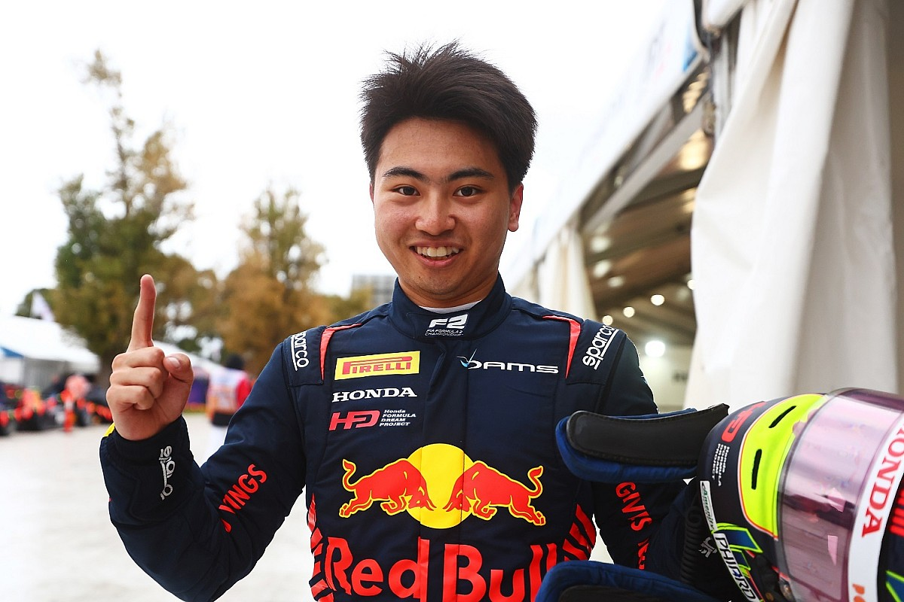
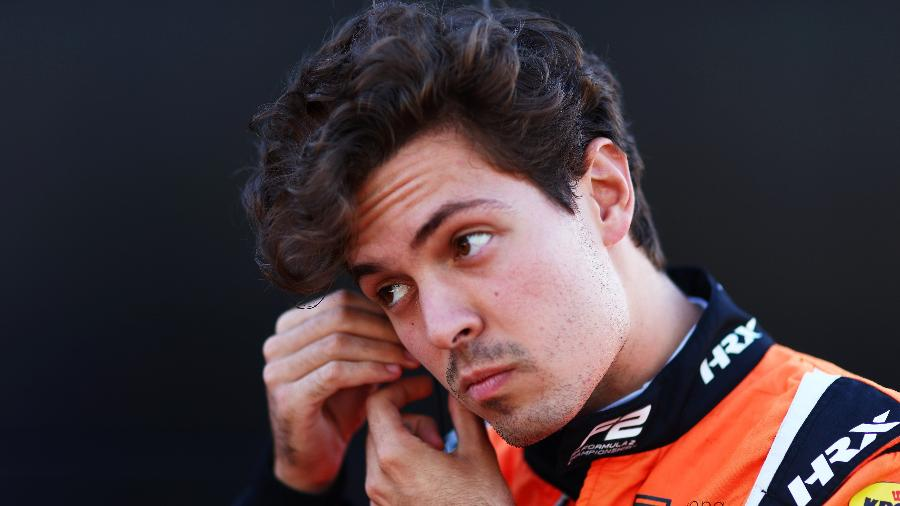
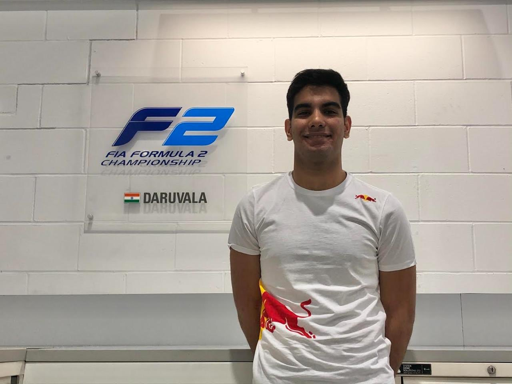

Salta directamente a la temporada 2022 de la Fórmula 2.
La Fórmula 2, considerada la antesala directa de la Fórmula 1, ha emergido como un campo de batalla donde la destreza de jóvenes pilotos se encuentra con la intensidad de las competiciones de monoplazas. Esta categoría, gestionada por la Federación Internacional del Automóvil (FIA), ha establecido un estándar excepcional en el desarrollo de talento automovilístico, convirtiéndose en un escenario esencial para que las promesas demuestren su valía y adquieran la experiencia necesaria para dar el siguiente paso en sus carreras.
La Fórmula 2 no solo se destaca por la velocidad y la habilidad técnica de sus participantes, sino también por su capacidad para reflejar de manera fidedigna las complejidades del automovilismo profesional. Los monoplazas de la F2, con sus motores potentes y chasis avanzados, proporcionan a los pilotos un terreno de juego formidable en el que deben equilibrar velocidad pura con estrategias de carrera astutas.
A lo largo de los años, la Fórmula 2 ha lanzado a la fama a numerosos pilotos que han dejado su huella en la Fórmula 1, desde Lewis Hamilton y Nico Rosberg hasta Charles Leclerc y George Russell. Este trampolín automovilístico ha forjado campeones y ha contribuido significativamente a la riqueza y la emoción del automovilismo internacional.
Así, la Fórmula 2 no solo representa una etapa en el camino hacia la Fórmula 1, sino que también encapsula la pasión, la competencia y la evolución constante que definen el mundo del automovilismo de élite.
En cada temporada de la Fórmula 2, los jóvenes aspirantes a pilotos se embarcan en un viaje emocionante y desafiante, enfrentándose a circuitos emblemáticos en todo el mundo y compitiendo en condiciones que exigen lo mejor de sus habilidades. La competencia feroz y las batallas en la pista no solo son una exhibición de velocidad y destreza, sino también una prueba de resistencia mental y capacidad para manejar la presión, habilidades cruciales para aquellos que buscan brillar en la Fórmula 1. 
La Fórmula 2 no solo se trata de carreras electrizantes, sino también de historias de determinación y superación. Cada piloto que cruza la línea de meta lleva consigo el sueño de alcanzar la cúspide del automovilismo, y la F2 proporciona la plataforma donde estos sueños pueden materializarse. Las narrativas de triunfos y desafíos en la Fórmula 2 se entrelazan con la rica historia del automovilismo, tejiendo la próxima generación de leyendas que cautivarán a los aficionados de todo el mundo.
La Fórmula 2, considerada la antesala directa de la Fórmula 1, ha emergido como un campo de batalla donde la destreza de jóvenes pilotos se encuentra con la intensidad de las competiciones de monoplazas...
La temporada de la Fórmula 2 en 2022 quedará marcada en la memoria de los amantes del
automovilismo. Desde la primera carrera hasta la última, los pilotos como Callum Ilott de
UNI-Virtuosi y Robert Shwartzman de Prema Racing ofrecieron un espectáculo excepcional,
demostrando su talento y determinación en cada curva y recta de los circuitos más emblemáticos
del calendario.

Las rivalidades entre equipos como Carlin, ART Grand Prix y Hitech Grand Prix alcanzaron su punto álgido, generando momentos de intensa emoción y estrategias tácticas. Pilotos como Guanyu Zhou, representando a Virtuosi Racing, y Jehan Daruvala de Carlin, se destacaron con actuaciones estelares que les valieron el reconocimiento de la comunidad automovilística.
Las habilidades de conducción de Felipe Drugovich de MP Motorsport, la velocidad pura de Christian Lundgaard de ART Grand Prix, y la astucia estratégica de Oscar Piastri de Prema Racing se fusionaron en una danza frenética en la que solo los más hábiles emergieron como contendientes al título. La Fórmula 2, como vivero de talentos, cumplió su función al descubrir y potenciar a las futuras estrellas del automovilismo.
Los eventos en ciudades icónicas y circuitos legendarios brindaron a los fanáticos experiencias inolvidables. Adelantamientos audaces, batallas en pista y momentos dramáticos protagonizados por pilotos como Liam Lawson de Hitech Grand Prix mantuvieron la atención de la audiencia en cada vuelta. La temporada 2022 de la Fórmula 2 no solo fue una competición, sino un viaje lleno de emoción y desarrollo para los pilotos que aspiran a alcanzar la cúspide del automovilismo en la Fórmula 1.
